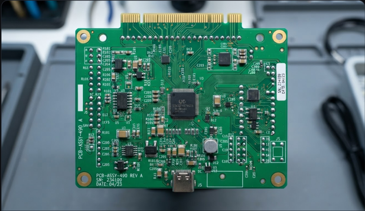
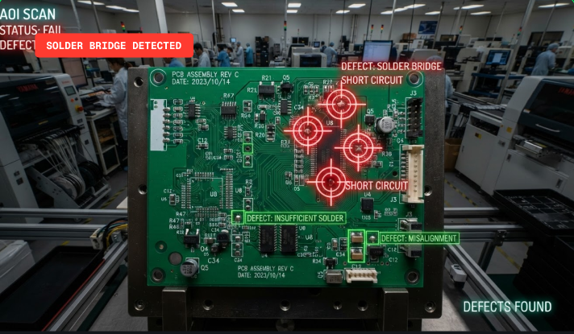

Deploy ultra-fast automated optical inspection for SMT lines with high-accuracy deep learning computer vision models trained to catch micro-fractures, missing pads, and soldering errors instantly.
 }})
ACCURACY RATE
SMT LINES MANAGED
BOARDS INSPECTED
INFERENCE LATENCY
High-speed camera captures ultra-high-resolution PCB transparently directly from the conveyor belt.
YOLOv8 DeepPCB models process imagery under 50ms, highlighting cracks, solder drips, or bridges.
Integrated robotic arms trigger instantly to discard or isolate any flagged board automatically.
Our system drops into your existing physical environment without interrupting layout footprints or assembly speeds.
Identify misalignment, bridges, cracks, or faulty components in milliseconds.
Synchronize seamlessly with speed encoders of your current line setup.
Output standard signals directly to pneumatic sorting gates or robotic arms.
Access granular cloud audit logs and performance charts in real-time.

Standard conveyor line camera perspective under bright overhead room lighting.

Bounding boxes, precise trace checks, sorting pneumatic robot arm output board.